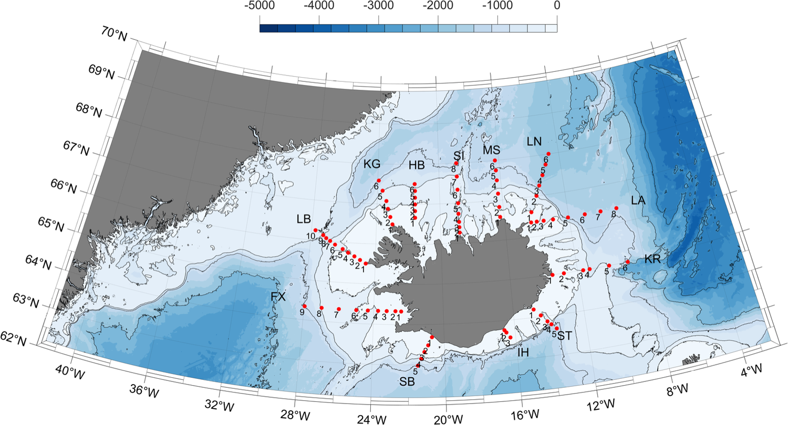

Iceland ROMS 2 km Ocean Model
A 2 km-resolution ROMS (Regional Ocean Modeling System) implementation of the seas around Iceland — the Iceland Sea, Denmark Strait and the Irminger Sea shelf — developed for physical oceanographic research and fisheries applications, with ongoing validation against independent observations.
This is a research model. Output presented here is experimental and intended
for research use only. It is provided to facilitate communication between
researchers and to improve the quality of the model through comparison with
observations. Use at your own risk.
Explore

ReadyAbout the Model
Domain, resolution, bathymetry and the institution behind the model.
 Ready
Ready
ROMS vs Argo Floats
36 colocated Argo floats: temperature and salinity profiles, time series, T-S diagrams and Hovmöller sections compared against the model.
In progressROMS vs Moorings
Fixed mooring records (ADCP currents, MicroCat temperature/salinity) from five stations around Iceland, 2017–2019.